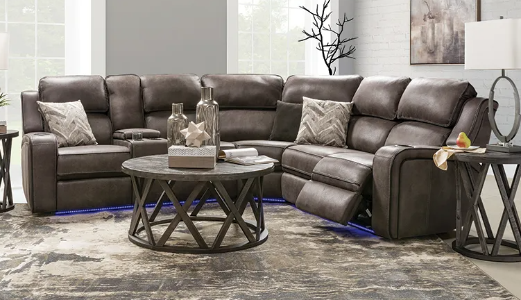

The Ideal Way to Care For Leather Living Room Sofa Furniture
Leather living room couch furniture is generally doesn't come cheap. Because of this, it's a great idea to secure your investment. This may be achieved in many different means.
1 means to do so is to educate yourself more about conventional and periodic cleanup and care practices. A number of this list of hints provided below pertains especially to the cleanup of leather upholstery:

Make certain that you use the proper water-based soap. انتريهات مودرن 2021 Additional believe it or even that the favored type could be foam-based cleansers that many people who have leather furniture today would utilize.
Saddle cleaner might not be acceptable for many kinds of modern-day leathers. For the large part it's far too unpleasant, but obviously it might depend upon the kind. To be on the safe side, prevent it or examine it on a concealed bit of cloth before applying it to the whole living room couch furniture collection.
Don't use any cleaners which contain silicone, which many standard leather polishes are doing. A number of these that are pure petroleum may operate, but also use those together with sparingly. The main reason is because a number include ingredients that will at any stage harm your whole leather group.
One extremely important suggestions about what NOT to do would be this: don't use baby wipes ! This actually-believe it or not-one of the worst mistakes you are able to make.
Leather epidermis is in no way just like a kid's bottom so that it doesn't at all attain the intended outcome. All you have to do is wind up destroying your living room couch furniture.
Additionally, realise that in the event that you utilize fairy liquid (dish soap ) it may corrode end of your leather upholstery. It's not recommended, since it's the additives added to those dish additives which cause a decent number of issues. Please utilize suggested soaps for this intention.
In contrast to popular belief, it appears like oils may in fact prevents re-hydration of this leather surface. اسعار الانتريهات That's the reason why water -based cleaning options are ordinarily suggested.
When you wash every single leather bit, make a point to not utilize an overabundant quantity of this may even impair your living room couch furniture investment. Drenching it may make it to wear out or be damaged considerably quicker.

Damp fabric dipped from the soap alternative whilst taking care of your living room furniture couch is recommended. There's actually no additional best method to wash your leather living room set.